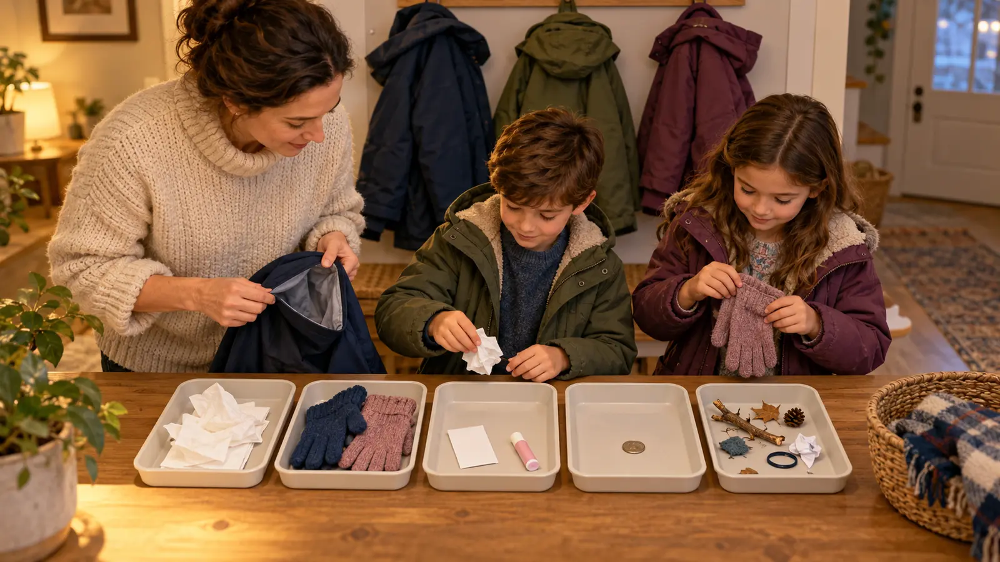

Trash
Clean wrappers, spent tissues and obvious litter. The adult checks pockets first so nothing private, sharp, wet or hazardous is grabbed blindly.
SCHOOL NIGHT · NO-SPEND SYSTEM · EXPLORATION
Old tissues, wet gloves and mystery crumbs are not an emergency kit. Empty every pocket, sort without shaming, reload only what belongs there, and quit when the timer rings.

Coat pockets become accidental junk drawers. That is annoying until the family actually needs dry gloves, a tissue or an emergency contact card and finds a wet wrapper instead. This twenty-minute reset is not about perfect organization. It is a short, repeatable school-night system for finding problems while everyone is warm and home.
No purchase is required. Use five bowls, trays, paper bags or clear table zones. One adult runs the timer and controls anything unsafe or private. Kids can own the ordinary decisions: trash, wash, return elsewhere, reload and ask an adult. The finish line is one usable coat per person—not every closet in the house.
You need a twenty-minute timer, five containers or labeled paper zones, a trash container, a laundry basket and the coats used most often. Optional: a blank index card for the adult-approved contact format, a pen and a towel for a damp tabletop. Do not print a full home address or medical history just because a template has space. The emergency-contact card drill explains the read-call-carry-update decision.
Pick a table away from food preparation and younger siblings. Put phones aside except for the timer. Agree that nobody will tease another person about what comes out of a pocket. Privacy is a safety rule, not a reward for neatness.
Use three questions. Does this item solve a likely problem? A clean tissue does; a pile of receipts does not. Can this child safely manage it? Adult-controlled medication does not belong in a child’s casual-access pocket. Will it survive the coat’s real conditions? A liquid, food or battery may leak, freeze, melt or be forgotten in a hot vehicle. When any answer is no, store the item elsewhere.
This is intentionally smaller than the family day-trip system or winter car kit. A coat pocket is not a substitute for an adult-managed first-aid kit, vehicle emergency supply or school medication plan.
Follow the child’s clinician, pharmacist, school policy and the exact medication label. Do not transfer pills into an unlabeled pocket container, leave rescue medication where a child cannot use it as prescribed, or treat a generic article as a care plan. The responsible adult decides whether medication is carried, by whom, at what temperature and with what backup. Use the medicine-away-from-home plan and food-allergy outing plan for the bigger system.
Loose button cells and damaged batteries are not sorting-game objects. Keep batteries in manufacturer-approved devices or protected storage, away from children and metal objects. If a battery is swollen, leaking, hot or damaged, stop; isolate people from the item and follow current manufacturer and local disposal guidance. For a suspected ingestion or exposure, use emergency or poison-control services immediately.
Do not photograph the table when names, school details, addresses, access cards or keys are visible. A contact card should disclose the minimum useful information and be reviewed by the adult. Never attach a home address to a house key. If a found key cannot be identified safely, the adult controls it. Kids are allowed to say “adult zone” without explaining why.
Read each garment care label before washing or applying stain treatment. Empty every pocket again, fasten closures as directed and remove detachable electronics or accessories only when the garment instructions permit it. Do not use heat to dry a garment unless its label allows it. For a simple repair skill, the supervised button lesson uses scrap practice first; zipper, seam and waterproof-construction repairs may need a qualified shop.
Low energy: reset one adult coat and one child coat for ten minutes. Younger sibling nearby: use a high table and let the older child name zones while the adult handles every object. Conflict: stop sorting personal items together and finish coats one at a time with the owner. Unknown mess: do not investigate by smell or touch; isolate the coat, wash hands if needed and follow appropriate product or poison guidance. No spare gloves: dry the usable pair according to its label and put a reminder by the door; buying duplicates is optional.
Skip the child-led version when there may be medication, needles, chemicals, damaged batteries, pest contamination or another hazard in the pockets. An adult should do the first pass alone. Adapt the activity for motor, vision or sensory needs by using larger trays, spoken zones, fewer coats and no timer. Families in crisis do not need a neatness lesson; reset only the coat required for tomorrow.
Reviewed October 26, 2026 using the U.S. Consumer Product Safety Commission’s button-battery safety center, Poison Help’s exposure guidance, and the care, medicine and privacy boundaries in Mr Adventure Dad’s established family systems. The five-zone card and twenty-minute sequence are original editorial tools. No purchase, affiliate link or private information is required. Report corrections through About.
MAKE THE WEEK COUNT
Build the plan your family can finish well, then leave enough energy for the next part of the day.
More family plans